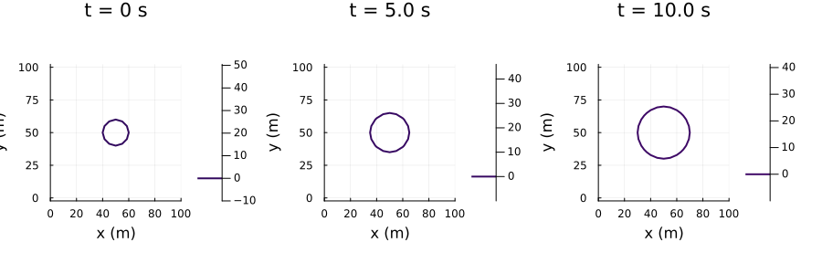
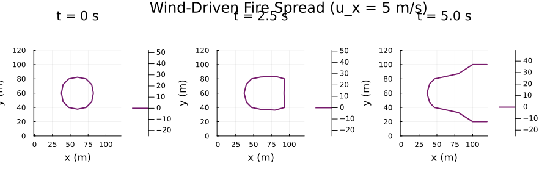
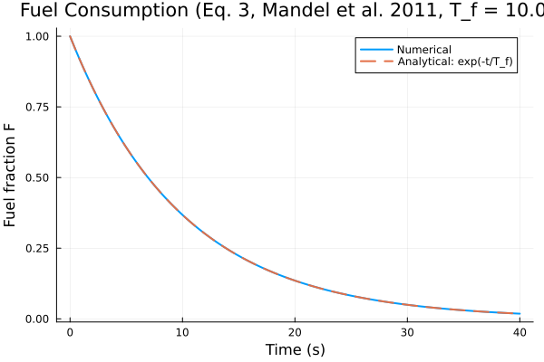
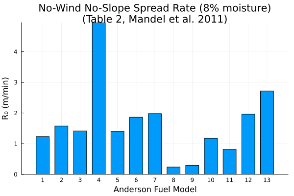
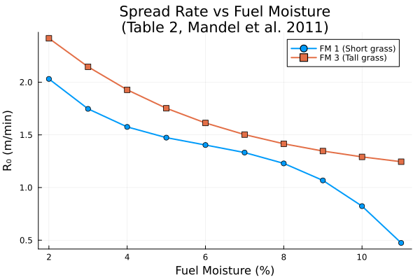

Level-Set Fire Spread Model
Overview
The level-set method for fire front propagation tracks the fire perimeter implicitly as the zero contour of a level-set function $\psi(x, y, t)$. The burning region is defined by $\psi \leq 0$ and unburned fuel by $\psi > 0$. The fire front evolves according to the Hamilton-Jacobi equation (Eq. 9, Mandel et al. 2011):
\[\frac{\partial \psi}{\partial t} + S(\hat{n}) \|\nabla \psi\| = 0\]
The direction-dependent spread rate is computed by projecting the midflame wind vector and terrain gradient onto the fire front normal $\hat{n} = \nabla\psi / \|\nabla\psi\|$ (Mandel 2011, Eq. 2; Muñoz-Esparza 2018, Eq. 10):
\[S(\hat{n}) = R_0 \left(1 + C \left(\frac{\max(0,\, \mathbf{u}_f \cdot \hat{n})}{U_{\text{ref}}}\right)^B \beta_{\text{ratio}}^{-E} + \phi_{s,\text{coeff}} \, \max(0,\, \nabla z \cdot \hat{n})^2 \right)\]
where $R_0$ is the no-wind no-slope rate of spread, $C$, $B$, $E$ are Rothermel wind factor coefficients, $\beta_{\text{ratio}}$ is the relative packing ratio, $\phi_{s,\text{coeff}} = 5.275 \beta^{-0.3}$ is the slope factor coefficient, $\mathbf{u}_f$ is the midflame wind vector, and $\nabla z$ is the terrain gradient. When wind and slope are zero, the equation reduces to the isotropic case $S = R_0$.
This approach enables natural handling of merging fire fronts, complex terrain, and realistic wind-driven fire shapes.
The implementation also includes fuel consumption and fire heat flux models that couple the fire front to atmospheric and fuel state.
Implementation Notes and Limitations
This implementation provides the core level-set fire spread algorithm using ModelingToolkit.jl and MethodOfLines.jl for spatial discretization. While based on Muñoz-Esparza et al. (2018), this version differs from the full WRF-Fire implementation in one key aspect:
Current Implementation:
- Fifth-order WENO (Weighted Essentially Non-Oscillatory) spatial discretization via MethodOfLines.jl
- Adaptive temporal integration via OrdinaryDiffEq.jl
- Anisotropic spread via Mandel/Esparza normal-projection of wind and slope, coupled through
RothermelFireSpread,MidflameWind, andTerrainSlope
Future work (full Muñoz-Esparza et al. 2018 algorithm):
- Level-set reinitialization equation to maintain signed distance property
This implementation provides accurate solutions for both circular and elliptical fire spread using the WENO scheme recommended by Muñoz-Esparza et al. (2018).
Accuracy Considerations
Muñoz-Esparza et al. (2018) demonstrate that common level-set implementations with standard finite differences yield rate-of-spread errors in the range 10–35% for typical grid sizes (Δ = 12.5–100 m) and considerably underestimate fire area. The fifth-order WENO scheme used in this implementation significantly reduces these errors.
References:
Muñoz-Esparza, D., Kosović, B., Jiménez, P.A., and Coen, J.L. (2018). An accurate fire-spread algorithm in the Weather Research and Forecasting model using the level-set method. J. Adv. Model. Earth Syst., 10, 908–926. doi:10.1002/2017MS001108
Mandel, J., Beezley, J.D., and Kochanski, A.K. (2011). Coupled atmosphere-wildland fire modeling with WRF 3.3 and SFIRE 2011. Geosci. Model Dev., 4, 591–610. doi:10.5194/gmd-4-591-2011
WildlandFire.LevelSetFireSpread — Function
LevelSetFireSpread(domain::DomainInfo; name=:LevelSetFireSpread,
initial_condition, boundary_conditions=nothing,
spread_rate=1.0)Create a level-set fire front propagation PDE system using the Mandel et al. (2011) / Muñoz-Esparza et al. (2018) normal-projection approach.
The fire front is tracked implicitly as the zero contour of a level-set function ψ(x, y, t), where ψ ≤ 0 is the burning region and ψ > 0 is unburned fuel. The level-set evolves according to the Hamilton-Jacobi equation (Mandel 2011, Eq. 9):
\[\frac{\partial \psi}{\partial t} + S(\hat{n}) \|\nabla \psi\| = 0\]
The direction-dependent spread rate is evaluated by projecting wind and terrain slope onto the fire front normal $\hat{n} = \nabla\psi / \|\nabla\psi\|$ (Mandel 2011, Eq. 2; Muñoz-Esparza 2018, Eq. 10):
\[S(\hat{n}) = R_0 \left(1 + C \left(\frac{\max(0,\, \mathbf{u}_f \cdot \hat{n})}{U_{\text{ref}}}\right)^B \beta_{\text{ratio}}^{-E} + \phi_{s,\text{coeff}} \, \max(0,\, \nabla z \cdot \hat{n})^2 \right)\]
When wind and slope are zero the equation reduces to the isotropic case $S = R_0$.
Implementation Details
Uses MethodOfLines.jl with WENO spatial discretization following Muñoz-Esparza et al. (2018). For production use, consider adding level-set reinitialization.
Arguments
domain: ADomainInfowith at least 2 spatial dimensions.name: System name (default:LevelSetFireSpread)initial_condition: Function(x, y) -> ψ₀. Negative = burning, positive = unburned.boundary_conditions: Optional BC equations. Default: Neumann (zero-gradient).spread_rate: Default no-wind no-slope rate of spread R_0 (m/s). Default 1.0.
References
Mandel, J., Beezley, J.D., and Kochanski, A.K. (2011). Coupled atmosphere-wildland fire modeling with WRF 3.3 and SFIRE 2011. Geosci. Model Dev., 4, 591–610. doi:10.5194/gmd-4-591-2011
Muñoz-Esparza, D., Kosović, B., Jiménez, P.A., and Coen, J.L. (2018). An accurate fire-spread algorithm in the Weather Research and Forecasting model using the level-set method. J. Adv. Model. Earth Syst., 10, 908–926. doi:10.1002/2017MS001108
Example
using WildlandFire, EarthSciMLBase, ModelingToolkit, DynamicQuantities
using ModelingToolkit: t
using MethodOfLines, DomainSets, OrdinaryDiffEqDefault
@parameters x [unit = u"m"]
@parameters y [unit = u"m"]
domain = DomainInfo(
constIC(0.0, t ∈ Interval(0.0, 60.0)),
constBC(0.0, x ∈ Interval(0.0, 500.0), y ∈ Interval(0.0, 500.0)),
)
initial_condition(x, y) = sqrt((x - 250.0)^2 + (y - 250.0)^2) - 10.0
sys = LevelSetFireSpread(domain; initial_condition, spread_rate=0.5)
dx = 5.0
discretization = MOLFiniteDifference([sys.ivs[2] => dx, sys.ivs[3] => dx], sys.ivs[1];
advection_scheme = WENOScheme())
prob = MethodOfLines.discretize(sys, discretization; checks=false)
sol = solve(prob)WildlandFire.FuelConsumption — Function
FuelConsumption(; name=:FuelConsumption)Create a fuel consumption model system.
The fuel fraction remaining at a point decreases exponentially after ignition, following Eq. 3 of Mandel et al. (2011):
\[F(t) = \exp\left(-\frac{t - t_i}{T_f}\right), \quad t > t_i\]
where $t_i$ is the ignition time and $T_f$ is the fuel burn time constant.
The fuel weight parameter $w$ relates to $T_f$ by: $T_f \approx w / 0.8514$
The effective fuel load is computed as $w_{0,\text{eff}} = F \cdot w_{0,\text{initial}}$, which is used by FireHeatFlux to compute sensible and latent heat fluxes released to the atmosphere. Per Mandel et al. (2011) Section 3.2, the fire spread rate depends on the original fuel model properties, not the remaining fuel fraction.
When coupled to LevelSetFireSpread, the is_burning parameter is driven by the level-set function ψ via a smooth Heaviside approximation: $\text{is\_burning} = 0.5 (1 - \tanh(\psi / \varepsilon))$
Reference
Mandel, J., Beezley, J.D., and Kochanski, A.K. (2011). Coupled atmosphere-wildland fire modeling with WRF 3.3 and SFIRE 2011. Geosci. Model Dev., 4, 591–610. doi:10.5194/gmd-4-591-2011
WildlandFire.FireHeatFlux — Function
FireHeatFlux(; name=:FireHeatFlux)Create a fire heat flux model system.
Computes the sensible and latent heat fluxes released by burning fuel. The sensible heat flux follows Eq. 4 and the latent heat flux follows Eq. 5 of Mandel et al. (2011).
Sensible heat flux:
\[\phi_h = \frac{-dF/dt \cdot w_\ell \cdot h}{1 + M_f}\]
Latent heat flux:
\[\phi_q = \frac{-dF/dt \cdot (M_f + 0.56) \cdot L \cdot w_\ell}{1 + M_f}\]
where 0.56 is the estimated mass ratio of water output from combustion to dry fuel, and L = 2.5 times 10^6 J/kg is the latent heat of condensation of water at 0 degrees C.
Reference
Mandel, J., Beezley, J.D., and Kochanski, A.K. (2011). Coupled atmosphere-wildland fire modeling with WRF 3.3 and SFIRE 2011. Geosci. Model Dev., 4, 591–610. doi:10.5194/gmd-4-591-2011
WildlandFire.anderson_fuel_coefficients — Function
anderson_fuel_coefficients(fuel_model::Int; M_f=0.08)Return precomputed Rothermel spread rate coefficients for an Anderson (1982) fuel model, along with fuel consumption parameters, following the form used in WRF-SFIRE.
The fire spread rate in WRF-SFIRE is computed as (Eq. 2, Mandel et al. 2011):
S = max{S_0, R_0 + c * min{e, max{0, U}}^b + d * max{0, tan(phi)}^2}where U is the normal wind component (m/s) and tan(phi) is the terrain slope in the fire front normal direction.
Arguments
fuel_model::Int: Anderson fuel model number (1-13)M_f: Fuel moisture content (default 0.08, i.e. 8%)
Returns
A NamedTuple with fields:
S_0: Minimum spread rate (m/s)R_0: No-wind no-slope spread rate (m/s)b: Wind exponent (dimensionless)c: Wind factor coefficient, used as c·U^b in Eq. 2 (units: (m/s)^(1-b))d: Slope factor coefficient (m/s)e: Maximum wind speed for spread rate (m/s)T_f: Fuel burn time constant (s)w_l: Total fuel load (kg/m^2)h: Heat content (J/kg)delta: Fuel bed depth (m)
Reference
Anderson, H. E. (1982). Aids to determining fuel models for estimating fire behavior. USDA Forest Service, Intermountain Forest and Range Experiment Station. Gen. Tech. Rep. INT-122.
Mandel, J., Beezley, J.D., and Kochanski, A.K. (2011). Coupled atmosphere-wildland fire modeling with WRF 3.3 and SFIRE 2011. Geosci. Model Dev., 4, 591-610.
Implementation
Level-Set PDE System
The LevelSetFireSpread function returns a PDESystem representing the anisotropic level-set equation on a 2D spatial domain with time. This implementation uses:
- Spatial Discretization: MethodOfLines.jl with fifth-order WENO scheme
- Temporal Integration: OrdinaryDiffEq.jl with adaptive time stepping
- Boundary Conditions: Neumann (zero gradient) by default, following Mandel et al. (2011) Sect. 3.4
- Anisotropic Spread: Mandel/Esparza normal-projection of wind and slope onto fire front normal
The Hamilton-Jacobi equation is discretized as:
\[\frac{\partial \psi}{\partial t} = -S(\hat{n}) \sqrt{\left(\frac{\partial \psi}{\partial x}\right)^2 + \left(\frac{\partial \psi}{\partial y}\right)^2}\]
where the direction-dependent speed $S(\hat{n})$ is computed by projecting wind and terrain slope onto the fire front normal (Mandel 2011, Eq. 2; Muñoz-Esparza 2018, Eq. 10).
using DataFrames, ModelingToolkit, Symbolics, DynamicQuantities
using ModelingToolkit: t
using WildlandFire, EarthSciMLBase, DomainSets
@parameters x [unit = u"m"]
@parameters y [unit = u"m"]
domain = DomainInfo(
constIC(0.0, t ∈ Interval(0.0, 10.0)),
constBC(0.0, x ∈ Interval(0.0, 100.0), y ∈ Interval(0.0, 100.0)),
)
sys = LevelSetFireSpread(domain;
initial_condition = (x, y) -> sqrt((x - 50.0)^2 + (y - 50.0)^2) - 10.0,
)
# Independent variables
DataFrame(
:Name => [string(v) for v in sys.ivs],
)| Row | Name |
|---|---|
| String | |
| 1 | t |
| 2 | x |
| 3 | y |
# Dependent variables
DataFrame(
:Name => [string(v) for v in sys.dvs],
)| Row | Name |
|---|---|
| String | |
| 1 | ψ(t, x, y) |
# Parameters
DataFrame(
:Name => [string(Symbolics.tosymbol(p, escape = false)) for p in sys.ps],
:Description => [ModelingToolkit.getdescription(p) for p in sys.ps]
)| Row | Name | Description |
|---|---|---|
| String | String | |
| 1 | R_0 | No-wind no-slope rate of spread |
| 2 | C_wind | Wind coefficient C (dimensionless) |
| 3 | B_wind | Wind exponent B (dimensionless) |
| 4 | E_wind | Wind coefficient E (dimensionless) |
| 5 | β_ratio | Relative packing ratio β/β_op (dimensionless) |
| 6 | φs_coeff | Slope factor coefficient 5.275*β^(-0.3) (dimensionless) |
| 7 | u_x | Midflame wind x-component |
| 8 | u_y | Midflame wind y-component |
| 9 | dzdx | Terrain gradient in x direction (dimensionless) |
| 10 | dzdy | Terrain gradient in y direction (dimensionless) |
| 11 | ψ_ref | Reference length for initial condition |
| 12 | one | Dimensionless one for unit balancing |
| 13 | grad_eps | Small value for numerical stability (dimensionless) |
| 14 | U_ref | Reference wind speed (1 ft/min in m/s) |
| 15 | zero_ms | Zero wind speed |
| 16 | zero_1 | Zero dimensionless |
| 17 | β_ratio_floor | Minimum β_ratio to avoid singularity (dimensionless) |
Equations
equations(sys)\[ \begin{align} \frac{\mathrm{d}}{\mathrm{d}t} ~ \psi\left( t, x, y \right) &= - \left( \mathtt{one} + \left( \frac{max\left( \mathtt{zero\_ms}, \mathtt{zero\_ms} + \frac{\mathtt{u\_x} ~ \frac{\mathrm{d}}{\mathrm{d}x} ~ \psi\left( t, x, y \right) + \mathtt{u\_y} ~ \frac{\mathrm{d}}{\mathrm{d}y} ~ \psi\left( t, x, y \right)}{\mathtt{grad\_eps} + \sqrt{\left( \frac{\mathrm{d}}{\mathrm{d}y} ~ \psi\left( t, x, y \right) \right)^{2} + \left( \frac{\mathrm{d}}{\mathrm{d}x} ~ \psi\left( t, x, y \right) \right)^{2}}} \right)}{\mathtt{U\_ref}} \right)^{\mathtt{B\_wind}} ~ \left( max\left( \mathtt{\beta\_ratio}, \mathtt{\beta\_ratio\_floor} \right) \right)^{ - \mathtt{E\_wind}} ~ \mathtt{C\_wind} + \left( max\left( \mathtt{zero\_1}, \mathtt{zero\_1} + \frac{\mathtt{dzdx} ~ \frac{\mathrm{d}}{\mathrm{d}x} ~ \psi\left( t, x, y \right) + \mathtt{dzdy} ~ \frac{\mathrm{d}}{\mathrm{d}y} ~ \psi\left( t, x, y \right)}{\mathtt{grad\_eps} + \sqrt{\left( \frac{\mathrm{d}}{\mathrm{d}y} ~ \psi\left( t, x, y \right) \right)^{2} + \left( \frac{\mathrm{d}}{\mathrm{d}x} ~ \psi\left( t, x, y \right) \right)^{2}}} \right) \right)^{2} ~ \mathtt{{\varphi}s\_coeff} \right) ~ \mathtt{R\_0} ~ \sqrt{\left( \frac{\mathrm{d}}{\mathrm{d}y} ~ \psi\left( t, x, y \right) \right)^{2} + \left( \frac{\mathrm{d}}{\mathrm{d}x} ~ \psi\left( t, x, y \right) \right)^{2}} \end{align} \]
Boundary Conditions
sys.bcs\[ \begin{align} \psi\left( 0, x, y \right) &= \left( -10 + \sqrt{\left( -50 + x \right)^{2} + \left( -50 + y \right)^{2}} \right) ~ \mathtt{\psi\_ref} \\ \frac{\mathrm{d}}{\mathrm{d}x} ~ \psi\left( t, 0, y \right) &= 0 \\ \frac{\mathrm{d}}{\mathrm{d}x} ~ \psi\left( t, 100, y \right) &= 0 \\ \frac{\mathrm{d}}{\mathrm{d}y} ~ \psi\left( t, x, 0 \right) &= 0 \\ \frac{\mathrm{d}}{\mathrm{d}y} ~ \psi\left( t, x, 100 \right) &= 0 \end{align} \]
Fuel Consumption
The FuelConsumption component models exponential fuel decay after ignition (Eq. 3, Mandel et al. 2011):
\[F(t) = \exp\left(-\frac{t - t_i}{T_f}\right), \quad t > t_i\]
where $t_i$ is the ignition time and $T_f = w / 0.8514$ is the fuel burn time constant derived from the fuel weight parameter $w$. The burn time constant is provided by FuelModelLookup via coupling, so it varies spatially by fuel type.
The effective fuel load $w_{0,\text{eff}} = F \cdot w_{0,\text{initial}}$ is used by FireHeatFlux to compute sensible and latent heat fluxes released to the atmosphere. Per Mandel et al. (2011) Section 3.2, the fire spread rate depends on the original fuel model properties, not the remaining fuel fraction.
fc = FuelConsumption()
vars = unknowns(fc)
DataFrame(
:Name => [string(Symbolics.tosymbol(v, escape = false)) for v in vars],
:Units => [string(ModelingToolkit.get_unit(v)) for v in vars],
:Description => [ModelingToolkit.getdescription(v) for v in vars]
)| Row | Name | Units | Description |
|---|---|---|---|
| String | String | String | |
| 1 | F | 1.0 | Fuel fraction remaining (1=full, 0=consumed) |
| 2 | w0_effective | 1.0 m⁻² kg | Effective fuel load after consumption |
equations(fc)\[ \begin{align} \frac{\mathrm{d} ~ F\left( t \right)}{\mathrm{d}t} &= \frac{ - \mathtt{is\_burning} ~ F\left( t \right)}{\mathtt{T\_f}} \\ \mathtt{w0\_effective}\left( t \right) &= \mathtt{w0\_initial} ~ F\left( t \right) \end{align} \]
Fire Heat Flux
The FireHeatFlux component computes sensible and latent heat fluxes from burning fuel (Eqs. 4–5, Mandel et al. 2011).
Sensible heat flux (Eq. 4):
\[\phi_h = \frac{-dF/dt \cdot w_\ell \cdot h}{1 + M_f} \quad (W\,m^{-2})\]
Latent heat flux (Eq. 5):
\[\phi_q = \frac{-dF/dt \cdot (M_f + 0.56) \cdot L \cdot w_\ell}{1 + M_f} \quad (W\,m^{-2})\]
where 0.56 is the estimated mass ratio of water output from combustion to dry fuel, and $L = 2.5 \times 10^6$ J/kg is the latent heat of condensation of water at 0°C.
fhf = FireHeatFlux()
vars = unknowns(fhf)
DataFrame(
:Name => [string(Symbolics.tosymbol(v, escape = false)) for v in vars],
:Units => [string(ModelingToolkit.get_unit(v)) for v in vars],
:Description => [ModelingToolkit.getdescription(v) for v in vars]
)| Row | Name | Units | Description |
|---|---|---|---|
| String | String | String | |
| 1 | phi_h | 1.0 kg s⁻³ | Sensible heat flux density |
| 2 | fuel_burn_rate | 1.0 s⁻¹ | Rate of fuel consumption (-dF/dt) |
| 3 | phi_q | 1.0 kg s⁻³ | Latent heat (moisture) flux density |
equations(fhf)\[ \begin{align} \mathtt{phi\_h}\left( t \right) &= \frac{\mathtt{h\_fuel} ~ \mathtt{w\_l} ~ \mathtt{fuel\_burn\_rate}\left( t \right)}{\mathtt{M\_f} + \mathtt{one}} \\ \mathtt{phi\_q}\left( t \right) &= \frac{\mathtt{L\_water} ~ \left( \mathtt{M\_f} + \mathtt{water\_combustion\_ratio} \right) ~ \mathtt{w\_l} ~ \mathtt{fuel\_burn\_rate}\left( t \right)}{\mathtt{M\_f} + \mathtt{one}} \end{align} \]
Fire Spread Rate (Eq. 2)
The fire spread rate is computed using the modified Rothermel formula (Eq. 2, Mandel et al. 2011):
\[S = \max\{S_0,\; R_0 + c \cdot \min\{e,\; \max\{0, U\}\}^b + d \cdot \max\{0,\; \tan\phi\}^2\}\]
where $U$ is the wind speed normal to the fire front (m/s), $\tan\phi$ is the terrain slope in the normal direction, and $S_0, R_0, b, c, d, e$ are fuel-dependent coefficients computed from the Rothermel (1972) model following Table 2 of Mandel et al. (2011).
Anderson Fuel Model Coefficients
The anderson_fuel_coefficients function precomputes these Rothermel spread rate coefficients for the 13 Anderson (1982) fuel models:
coeffs = anderson_fuel_coefficients(1)
DataFrame(
:Field => [string(k) for k in keys(coeffs)],
:Value => [coeffs[k] for k in keys(coeffs)],
:Units => ["m/s", "m/s", "—", "(m/s)^(1-b)", "m/s", "m/s", "s", "kg/m²", "J/kg", "m"],
)| Row | Field | Value | Units |
|---|---|---|---|
| String | Float64 | String | |
| 1 | S_0 | 0.0 | m/s |
| 2 | R_0 | 0.020486 | m/s |
| 3 | b | 2.07124 | — |
| 4 | c | 0.0842844 | (m/s)^(1-b) |
| 5 | d | 0.862769 | m/s |
| 6 | e | 30.0 | m/s |
| 7 | T_f | 8.22175 | s |
| 8 | w_l | 0.166 | kg/m² |
| 9 | h | 1.86089e7 | J/kg |
| 10 | delta | 0.305 | m |
Fuel Properties (Table 1, Mandel et al. 2011)
The fuel is characterized by the quantities listed in Table 1 of Mandel et al. (2011). The 13 Anderson (1982) fuel categories provide preset vectors of these properties. Note that some quantities are stored in English units per the Rothermel (1972) convention (surface-area-to-volume ratio $\sigma$ in 1/ft, fuel particle density $\rho_p$ in lb/ft³, and heat content $h$ in BTU/lb).
fuel_names = [
"Short grass", "Timber grass/understory", "Tall grass",
"Chaparral", "Brush", "Dormant brush",
"Southern rough", "Compact timber litter", "Hardwood litter",
"Timber (understory)", "Light logging slash", "Medium logging slash",
"Heavy logging slash"
]
DataFrame(
:Model => 1:13,
:Name => fuel_names,
Symbol("w_ℓ (kg/m²)") => [ANDERSON_FUEL_DATA[i].fgi for i in 1:13],
Symbol("δ (m)") => [ANDERSON_FUEL_DATA[i].depth for i in 1:13],
Symbol("σ (1/ft)") => [ANDERSON_FUEL_DATA[i].savr for i in 1:13],
Symbol("M_x") => [ANDERSON_FUEL_DATA[i].mce for i in 1:13],
Symbol("ρ_p (lb/ft³)") => [ANDERSON_FUEL_DATA[i].dens for i in 1:13],
Symbol("S_T") => [ANDERSON_FUEL_DATA[i].st for i in 1:13],
Symbol("S_E") => [ANDERSON_FUEL_DATA[i].se for i in 1:13],
Symbol("h (BTU/lb)") => [ANDERSON_FUEL_DATA[i].h for i in 1:13],
Symbol("w (s)") => [ANDERSON_FUEL_DATA[i].weight for i in 1:13],
)| Row | Model | Name | w_ℓ (kg/m²) | δ (m) | σ (1/ft) | M_x | ρ_p (lb/ft³) | S_T | S_E | h (BTU/lb) | w (s) |
|---|---|---|---|---|---|---|---|---|---|---|---|
| Int64 | String | Float64 | Float64 | Int64 | Float64 | Float64 | Float64 | Float64 | Float64 | Int64 | |
| 1 | 1 | Short grass | 0.166 | 0.305 | 3500 | 0.12 | 32.0 | 0.0555 | 0.01 | 8000.0 | 7 |
| 2 | 2 | Timber grass/understory | 0.896 | 0.305 | 3000 | 0.15 | 32.0 | 0.0555 | 0.01 | 8000.0 | 7 |
| 3 | 3 | Tall grass | 0.674 | 0.762 | 1500 | 0.25 | 32.0 | 0.0555 | 0.01 | 8000.0 | 7 |
| 4 | 4 | Chaparral | 3.591 | 1.829 | 1739 | 0.2 | 32.0 | 0.0555 | 0.01 | 8000.0 | 180 |
| 5 | 5 | Brush | 0.784 | 0.61 | 1683 | 0.2 | 32.0 | 0.0555 | 0.01 | 8000.0 | 25 |
| 6 | 6 | Dormant brush | 1.344 | 0.762 | 1564 | 0.25 | 32.0 | 0.0555 | 0.01 | 8000.0 | 25 |
| 7 | 7 | Southern rough | 1.091 | 0.762 | 1562 | 0.4 | 32.0 | 0.0555 | 0.01 | 8000.0 | 25 |
| 8 | 8 | Compact timber litter | 1.12 | 0.061 | 1889 | 0.3 | 32.0 | 0.0555 | 0.01 | 8000.0 | 900 |
| 9 | 9 | Hardwood litter | 0.78 | 0.061 | 2484 | 0.25 | 32.0 | 0.0555 | 0.01 | 8000.0 | 900 |
| 10 | 10 | Timber (understory) | 2.694 | 0.305 | 1764 | 0.25 | 32.0 | 0.0555 | 0.01 | 8000.0 | 900 |
| 11 | 11 | Light logging slash | 2.582 | 0.305 | 1182 | 0.15 | 32.0 | 0.0555 | 0.01 | 8000.0 | 900 |
| 12 | 12 | Medium logging slash | 7.749 | 0.701 | 1145 | 0.2 | 32.0 | 0.0555 | 0.01 | 8000.0 | 900 |
| 13 | 13 | Heavy logging slash | 13.024 | 0.914 | 1159 | 0.25 | 32.0 | 0.0555 | 0.01 | 8000.0 | 900 |
Derived Quantities
The computed spread rate coefficients and burn parameters for each fuel model:
all_coeffs = [anderson_fuel_coefficients(i) for i in 1:13]
DataFrame(
:Model => 1:13,
:Name => fuel_names,
Symbol("R₀ (m/s)") => [round(c.R_0, sigdigits=4) for c in all_coeffs],
Symbol("T_f (s)") => [round(c.T_f, sigdigits=4) for c in all_coeffs],
Symbol("w_l (kg/m²)") => [c.w_l for c in all_coeffs],
Symbol("δ (m)") => [c.delta for c in all_coeffs],
)| Row | Model | Name | R₀ (m/s) | T_f (s) | w_l (kg/m²) | δ (m) |
|---|---|---|---|---|---|---|
| Int64 | String | Float64 | Float64 | Float64 | Float64 | |
| 1 | 1 | Short grass | 0.02049 | 8.222 | 0.166 | 0.305 |
| 2 | 2 | Timber grass/understory | 0.02625 | 8.222 | 0.896 | 0.305 |
| 3 | 3 | Tall grass | 0.02359 | 8.222 | 0.674 | 0.762 |
| 4 | 4 | Chaparral | 0.0825 | 211.4 | 3.591 | 1.829 |
| 5 | 5 | Brush | 0.02335 | 29.36 | 0.784 | 0.61 |
| 6 | 6 | Dormant brush | 0.03106 | 29.36 | 1.344 | 0.762 |
| 7 | 7 | Southern rough | 0.03299 | 29.36 | 1.091 | 0.762 |
| 8 | 8 | Compact timber litter | 0.003973 | 1057.0 | 1.12 | 0.061 |
| 9 | 9 | Hardwood litter | 0.004912 | 1057.0 | 0.78 | 0.061 |
| 10 | 10 | Timber (understory) | 0.0196 | 1057.0 | 2.694 | 0.305 |
| 11 | 11 | Light logging slash | 0.01359 | 1057.0 | 2.582 | 0.305 |
| 12 | 12 | Medium logging slash | 0.03271 | 1057.0 | 7.749 | 0.701 |
| 13 | 13 | Heavy logging slash | 0.04529 | 1057.0 | 13.024 | 0.914 |
Rothermel Spread Rate Computation (Table 2, Mandel et al. 2011)
The computation of the fire spread rate factors from fuel properties follows the equations in Table 2 of Mandel et al. (2011), originally from Rothermel (1972). Here we show the full coefficients for fuel model 1 (short grass) at 8% moisture:
coeffs1 = anderson_fuel_coefficients(1; M_f = 0.08)
DataFrame(
:Coefficient => ["S₀", "R₀", "b", "c", "d", "e"],
:Description => [
"Minimum spread rate",
"No-wind no-slope spread rate",
"Wind speed exponent",
"Wind factor coefficient (used as c·U^b)",
"Slope factor coefficient",
"Maximum wind speed",
],
:Value => [coeffs1.S_0, coeffs1.R_0, coeffs1.b, coeffs1.c, coeffs1.d, coeffs1.e],
:Units => ["m/s", "m/s", "—", "(m/s)^(1-b)", "m/s", "m/s"],
)| Row | Coefficient | Description | Value | Units |
|---|---|---|---|---|
| String | String | Float64 | String | |
| 1 | S₀ | Minimum spread rate | 0.0 | m/s |
| 2 | R₀ | No-wind no-slope spread rate | 0.020486 | m/s |
| 3 | b | Wind speed exponent | 2.07124 | — |
| 4 | c | Wind factor coefficient (used as c·U^b) | 0.0842844 | (m/s)^(1-b) |
| 5 | d | Slope factor coefficient | 0.862769 | m/s |
| 6 | e | Maximum wind speed | 30.0 | m/s |
Analysis
Circular Fire Spread (Isotropic)
With a constant spread rate $S$ and no wind or slope, the level-set equation produces circular fire spread. Starting from a circular ignition of radius $r_0$, the fire radius at time $t$ should be $r_0 + S \cdot t$. This is the fundamental analytical solution for the level-set equation (Mandel et al. 2011, Sect. 3.4).
using MethodOfLines, OrdinaryDiffEqDefault, OrdinaryDiffEqRosenbrock, Plots
r0 = 10.0 # initial radius (m)
S_val = 1.0 # spread rate (m/s)
domain_size = 100.0
center = domain_size / 2.0
t_end = 10.0
domain_circ = DomainInfo(
constIC(0.0, t ∈ Interval(0.0, t_end)),
constBC(0.0, x ∈ Interval(0.0, domain_size), y ∈ Interval(0.0, domain_size)),
)
sys = LevelSetFireSpread(domain_circ;
initial_condition = (x, y) -> sqrt((x - center)^2 + (y - center)^2) - r0,
spread_rate = S_val,
)
dx = 5.0
discretization = MOLFiniteDifference([sys.ivs[2] => dx, sys.ivs[3] => dx], sys.ivs[1];
advection_scheme = WENOScheme())
prob = MethodOfLines.discretize(sys, discretization; checks = false)
sol = solve(prob; saveat = [0.0, t_end / 2, t_end])
psi = sol[sys.dvs[1]]
x_grid = sol[sys.ivs[2]]
y_grid = sol[sys.ivs[3]]
p1 = contour(x_grid, y_grid, psi[1, :, :]', levels = [0.0],
title = "t = 0 s", xlabel = "x (m)", ylabel = "y (m)",
aspect_ratio = :equal, linewidth = 2, label = "Fire front")
p2 = contour(x_grid, y_grid, psi[2, :, :]', levels = [0.0],
title = "t = $(t_end/2) s", xlabel = "x (m)", ylabel = "y (m)",
aspect_ratio = :equal, linewidth = 2, label = "Fire front")
p3 = contour(x_grid, y_grid, psi[end, :, :]', levels = [0.0],
title = "t = $t_end s", xlabel = "x (m)", ylabel = "y (m)",
aspect_ratio = :equal, linewidth = 2, label = "Fire front")
plot(p1, p2, p3, layout = (1, 3), size = (900, 300))
Wind-Driven Fire Spread (Anisotropic)
When wind is present, the fire spreads faster in the downwind direction because the normal wind component $\mathbf{u}_f \cdot \hat{n}$ is larger. Here we demonstrate with a 5 m/s wind in the +x direction using Rothermel coefficients for fuel model 1 (short grass):
# Use a coarse 7×7 grid to keep compilation of the discretized PDE manageable.
r0 = 25.0 # initial radius (m)
R_0_val = 0.1 # no-wind no-slope spread rate (m/s)
domain_size = 120.0
center = domain_size / 2.0
t_end = 5.0
domain_wind = DomainInfo(
constIC(0.0, t ∈ Interval(0.0, t_end)),
constBC(0.0, x ∈ Interval(0.0, domain_size), y ∈ Interval(0.0, domain_size)),
)
sys_wind = LevelSetFireSpread(domain_wind;
initial_condition = (x, y) -> sqrt((x - center)^2 + (y - center)^2) - r0,
spread_rate = R_0_val,
)
# Set wind in +x direction and Rothermel wind coefficients
for p in sys_wind.ps
sym = Symbolics.tosymbol(p, escape = false)
if sym == :u_x
sys_wind.initial_conditions[Symbolics.unwrap(p)] = 5.0 # 5 m/s eastward wind
elseif sym == :C_wind
sys_wind.initial_conditions[Symbolics.unwrap(p)] = 7.47
elseif sym == :B_wind
sys_wind.initial_conditions[Symbolics.unwrap(p)] = 0.15566
elseif sym == :E_wind
sys_wind.initial_conditions[Symbolics.unwrap(p)] = 0.715
elseif sym == :β_ratio
sys_wind.initial_conditions[Symbolics.unwrap(p)] = 0.5
end
end
dx = 20.0 # 6 cells per side → 7 grid points (minimum for 5th-order WENO)
disc_wind = MOLFiniteDifference(
[sys_wind.ivs[2] => dx, sys_wind.ivs[3] => dx], sys_wind.ivs[1];
advection_scheme = WENOScheme())
prob_wind = MethodOfLines.discretize(sys_wind, disc_wind; checks = false)
sol_wind = solve(prob_wind, Rosenbrock23(); saveat = [0.0, t_end / 2, t_end])
psi_w = sol_wind[sys_wind.dvs[1]]
x_grid_w = sol_wind[sys_wind.ivs[2]]
y_grid_w = sol_wind[sys_wind.ivs[3]]
p1 = contour(x_grid_w, y_grid_w, psi_w[1, :, :]', levels = [0.0],
title = "t = 0 s", xlabel = "x (m)", ylabel = "y (m)",
aspect_ratio = :equal, linewidth = 2, label = "Fire front")
p2 = contour(x_grid_w, y_grid_w, psi_w[2, :, :]', levels = [0.0],
title = "t = $(t_end/2) s", xlabel = "x (m)", ylabel = "y (m)",
aspect_ratio = :equal, linewidth = 2, label = "Fire front")
p3 = contour(x_grid_w, y_grid_w, psi_w[end, :, :]', levels = [0.0],
title = "t = $t_end s", xlabel = "x (m)", ylabel = "y (m)",
aspect_ratio = :equal, linewidth = 2, label = "Fire front")
plot(p1, p2, p3, layout = (1, 3), size = (900, 300),
plot_title = "Wind-Driven Fire Spread (u_x = 5 m/s)")
Fuel Consumption Dynamics (Eq. 3)
The fuel fraction $F(t)$ decays exponentially with time constant $T_f$ after ignition, following Eq. 3 of Mandel et al. (2011). The fuel weight parameter $w$ determines the burn time through $T_f = w / 0.8514$. For $w = 1000$ s, fuel burns to 60% of its original quantity in 600 s (Table 1, Mandel et al. 2011).
fc = FuelConsumption()
compiled_fc = mtkcompile(fc)
T_f_val = 10.0
prob_fc = ODEProblem(
compiled_fc,
Dict(compiled_fc.F => 1.0),
(0.0, 40.0),
Dict(compiled_fc.T_f => T_f_val, compiled_fc.is_burning => 1.0, compiled_fc.w0_initial => 1.0),
)
sol_fc = solve(prob_fc)
t_plot = 0:0.1:40
F_numerical = [sol_fc(ti, idxs = compiled_fc.F) for ti in t_plot]
F_analytical = exp.(-t_plot ./ T_f_val)
plot(t_plot, F_numerical, label = "Numerical", linewidth = 2)
plot!(t_plot, F_analytical, label = "Analytical: exp(-t/T_f)", linestyle = :dash, linewidth = 2)
xlabel!("Time (s)")
ylabel!("Fuel fraction F")
title!("Fuel Consumption (Eq. 3, Mandel et al. 2011, T_f = $(T_f_val) s)")┌ Warning: `SciMLBase.ODEProblem(sys, u0, tspan, p; kw...)` is deprecated. Use
│ `SciMLBase.ODEProblem(sys, merge(u0, p), tspan)` instead.
└ @ ModelingToolkitBase ~/.julia/packages/ModelingToolkitBase/w79Z9/src/deprecations.jl:53
Anderson Fuel Model Comparison
Comparison of no-wind no-slope spread rates $R_0$ across the 13 Anderson fuel models at 8% fuel moisture, computed using the Rothermel coefficients from Table 2 of Mandel et al. (2011):
R0_vals = [anderson_fuel_coefficients(i).R_0 for i in 1:13]
bar(1:13, R0_vals .* 60, # Convert m/s to m/min
xticks = (1:13, string.(1:13)),
xlabel = "Anderson Fuel Model",
ylabel = "R₀ (m/min)",
title = "No-Wind No-Slope Spread Rate (8% moisture)\n(Table 2, Mandel et al. 2011)",
legend = false,
bar_width = 0.7)
Moisture Sensitivity (Table 2, Mandel et al. 2011)
Higher fuel moisture reduces spread rate by absorbing heat that would otherwise preheat adjacent fuel. The moisture damping coefficient $\eta_M$ (Eq. 29/30, Rothermel 1972) decreases the reaction intensity as moisture approaches the moisture of extinction $M_x$:
moisture_range = 0.02:0.01:0.11
R0_fm1 = [anderson_fuel_coefficients(1; M_f = m).R_0 for m in moisture_range]
R0_fm3 = [anderson_fuel_coefficients(3; M_f = m).R_0 for m in moisture_range]
plot(moisture_range .* 100, R0_fm1 .* 60,
label = "FM 1 (Short grass)", linewidth = 2, marker = :circle)
plot!(moisture_range .* 100, R0_fm3 .* 60,
label = "FM 3 (Tall grass)", linewidth = 2, marker = :square)
xlabel!("Fuel Moisture (%)")
ylabel!("R₀ (m/min)")
title!("Spread Rate vs Fuel Moisture\n(Table 2, Mandel et al. 2011)")